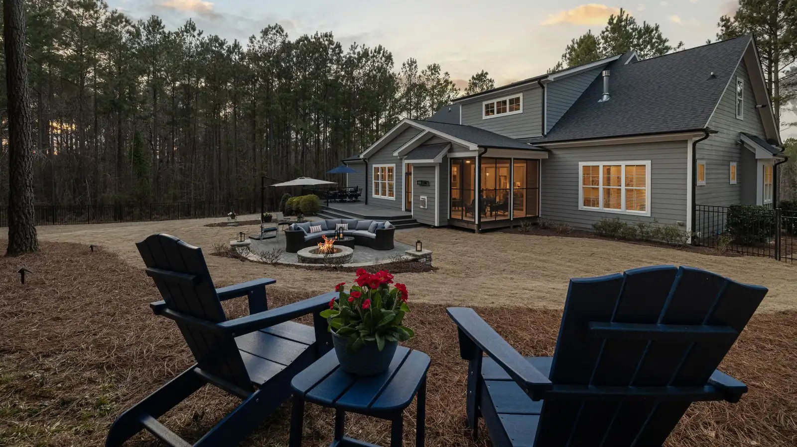
Stone patios, walls and steps.
Laid by hand for homes around Doylestown, PA. Tell me about the spot and I will come look at it.
What I build
Four kinds of stonework. Pick one to see the photos.
Patios
Flagstone, fieldstone and pavers, cut to fit the house and the yard.
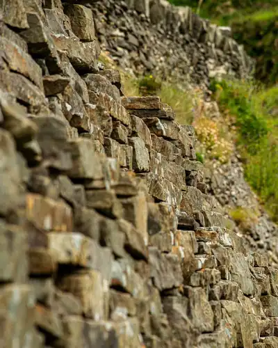
Retaining walls
Dry stacked or mortared, built to hold the slope and let the water out.
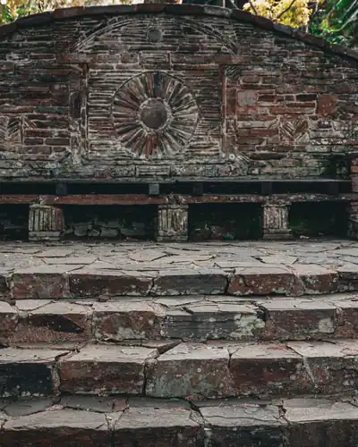
Steps and walkways
Set on a packed base so they stay level and do not rock.
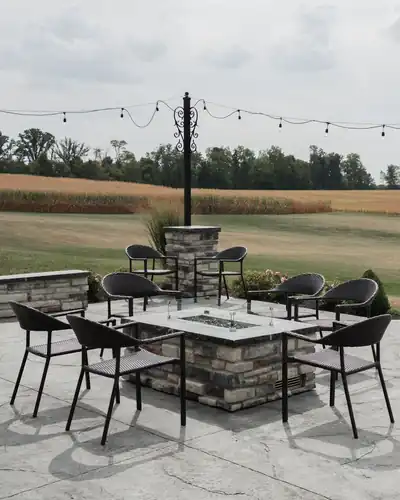
Fire pits
Round or square, with seat walls to match.
Plus repairs: sunken patios relaid, leaning walls rebuilt, loose steps reset.
Walls, steps, patios, fire pits. Every job starts below ground, with a packed base and a path for the water. Then each stone is set by hand.
Why Stonecrop
Stonecrop is a small plant that roots in the cracks of old stone walls and lives on almost no soil. Good stonework should last the same way.
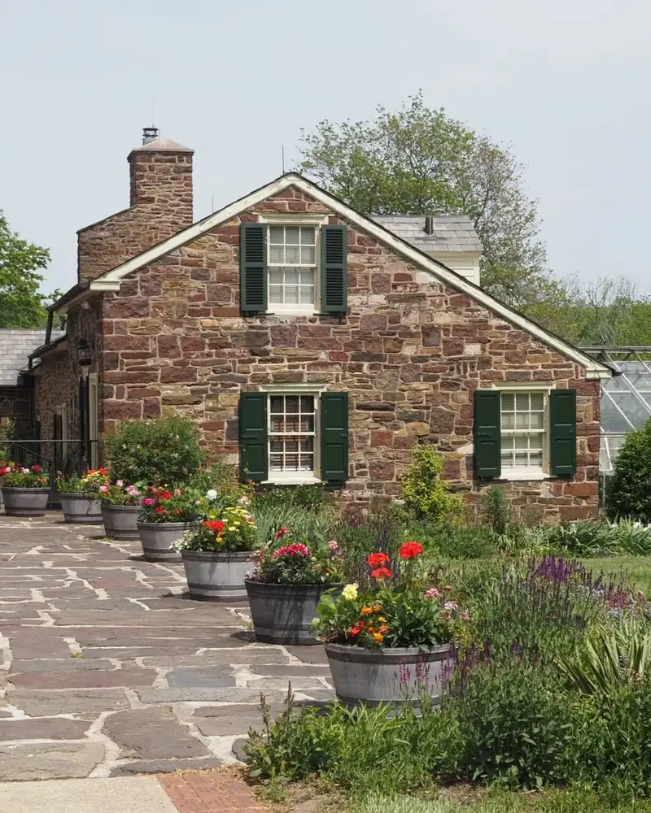
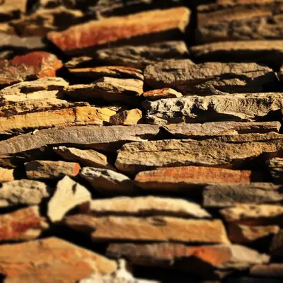
Made to sit beside old stoneBucks County is known for its old stone houses. New stonework should look at home next to them.
The work, up close
Three kinds of job, when you need each one and what goes into it. The photos are examples for this sample.
-
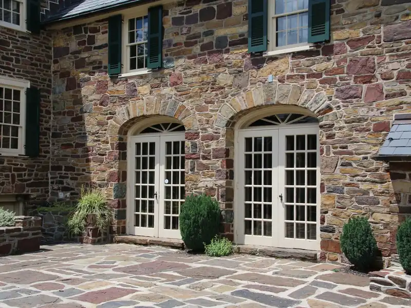
Flagstone patios
Mixed color flagstone set on a packed base, cut to meet the door sills and the planting beds, with a slight fall so rain runs off.
- When you need it
- A patio that has sunk or heaved, a bare patch by the back door, or simply a place to sit outside.
- What is included
- Digging out, a packed crushed stone base, every piece cut and set, the joints filled and the dirt hauled away.
-
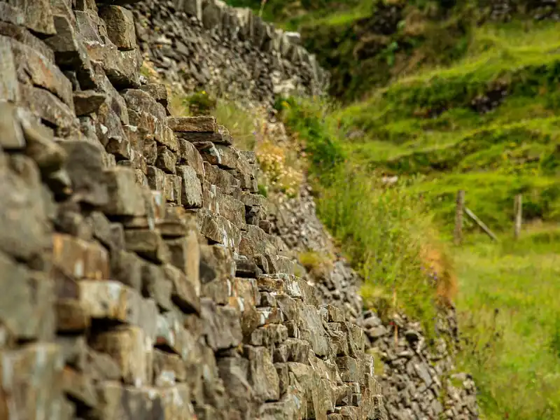
Dry stacked walls
No mortar. Weight and fit hold it. Each course steps back into the slope, with clean gravel and a drain pipe behind the stone.
- When you need it
- A bank that keeps washing out, a slope too steep to mow, or a level spot you want cut into the yard.
- What is included
- Digging out, a packed base, clean gravel and a drain pipe behind the stone, and each course stepped back.
-
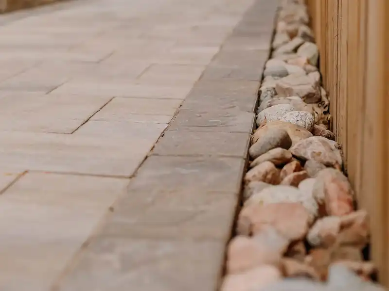
Walkways and side paths
Flat stone on a leveled base, held by an edge, with a strip of rock beside it so the water has somewhere to go.
- When you need it
- A path worn through the lawn, a side yard that turns to mud, or a walk with stones that rock underfoot.
- What is included
- A leveled base, an edge to hold the stone in place, the rock strip for drainage and the cleanup after.
How a job goes
You ask for an estimate
Use the short form, or call or text: what you need, your town and a rough size.
I walk the yard
I look at the slope, the soil and where the water goes, then measure.
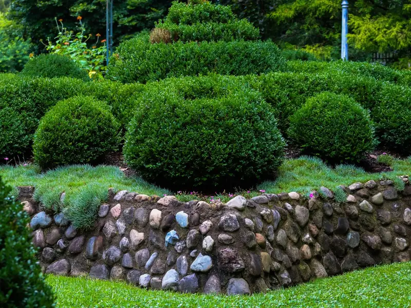
The price
You get a price for the whole job, with the stone, the base, hauling and cleanup in it.
Dig and base
I dig out, lay fabric and pack crushed stone in layers. Nobody sees this part, but the stone sits on it.
Stone goes down
Each piece is fitted and leveled by hand. Walls are backfilled with gravel as they go up.
Clean up and walk through
I haul off the dirt and scraps, sweep the joints and walk the finished work with you.
Photos of stonework
Patios, walls, steps and fire pits. These are example photos for this sample design. Tap one to see it larger.
All 10 photos
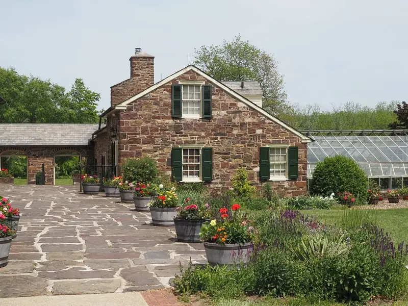
Fieldstone house and terrace- Steps in the lawn
- Dry wall up close
- Flagstone patio
- Steps and bench
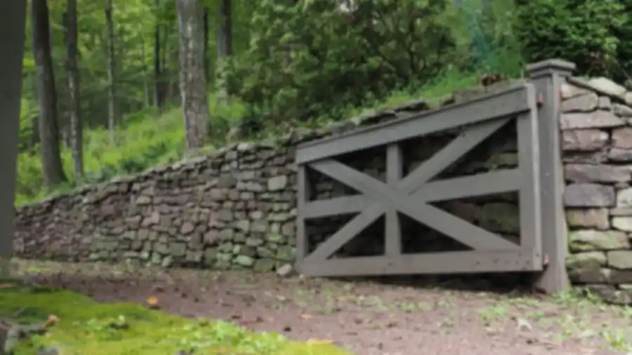
Wall and gate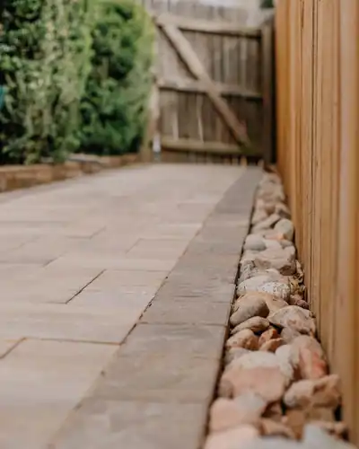
Side walkway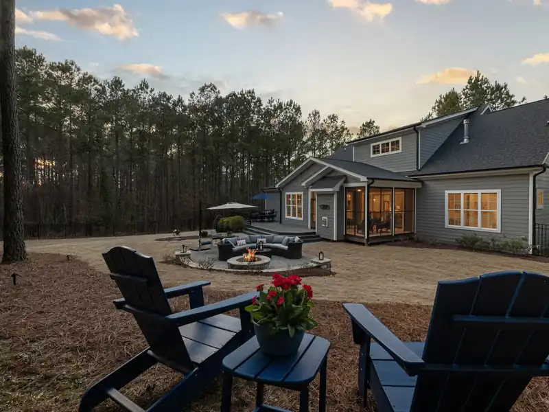
Fire pit at dusk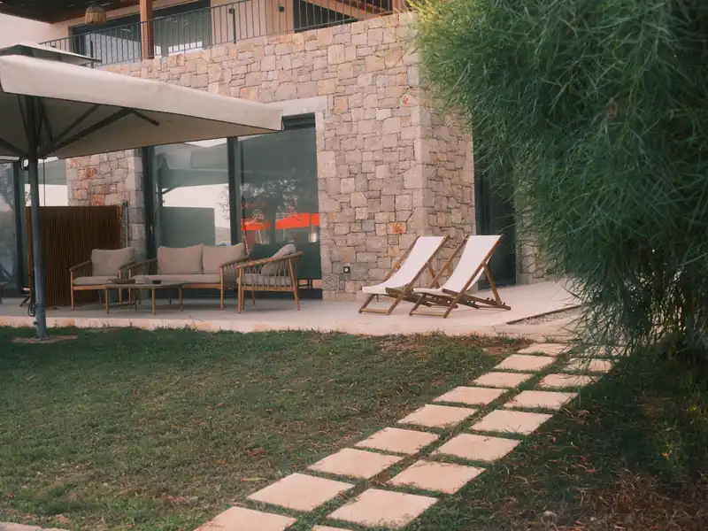
Stone wall and patio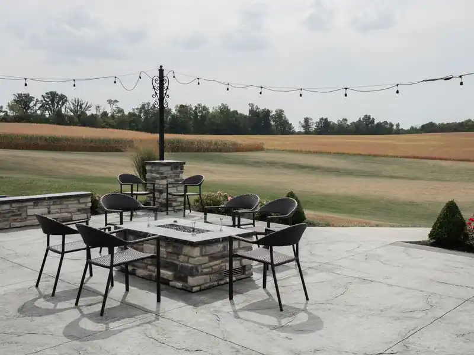
Fire table


Every yard is different, so I price each job after I see it.
Who sets the stone
Stonecrop is one mason. Whoever walks your yard also digs the base and sets each stone.
One person, start to finish
You talk to the same person at the visit, during the work and at the walk through.
One price for the whole job
The stone, the base, hauling and cleanup are all in it.
Stone picked for the house
Fieldstone, flagstone or granite, picked to suit the house. Samples come with me, so you can choose.
Can you fix a wall someone else built?
Yes. Some walls need one section rebuilt, others need the whole run taken down and relaid. I tell you which after I see it.
How long does a patio take?
It depends on the size, the ground and the weather. You get a day count along with the price.
Do you work through the winter?
Most of it. January nights here average about 21 degrees, and mortar needs extra protection below 40, so cold stretches go to dry stone work. Nothing gets built on frozen ground.
What stone do you use?
Fieldstone, flagstone and granite, picked to suit the house. I bring samples so you can choose.
Do you haul away the dirt?
Yes. Digging out, hauling and cleanup are part of the job.
Does a retaining wall need a permit?
Tall walls can need an engineer and a permit. I tell you at the visit if yours does, so you can check with your local permit office.
Based in Doylestown, PA.
Put your town in the estimate form and I will tell you if your job is in reach.
Request an estimateRequest an estimate
Tell me where it goes and about how big. I will tell you what it takes.
Rather talk it through? Call or text 215 555 0163.
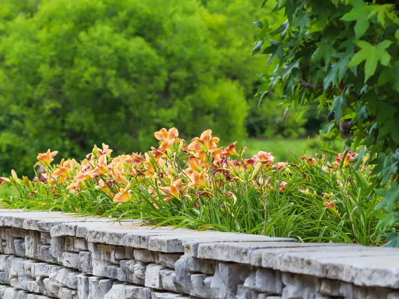
The estimate form needs JavaScript. This is a sample design, so it does not send anything either way.